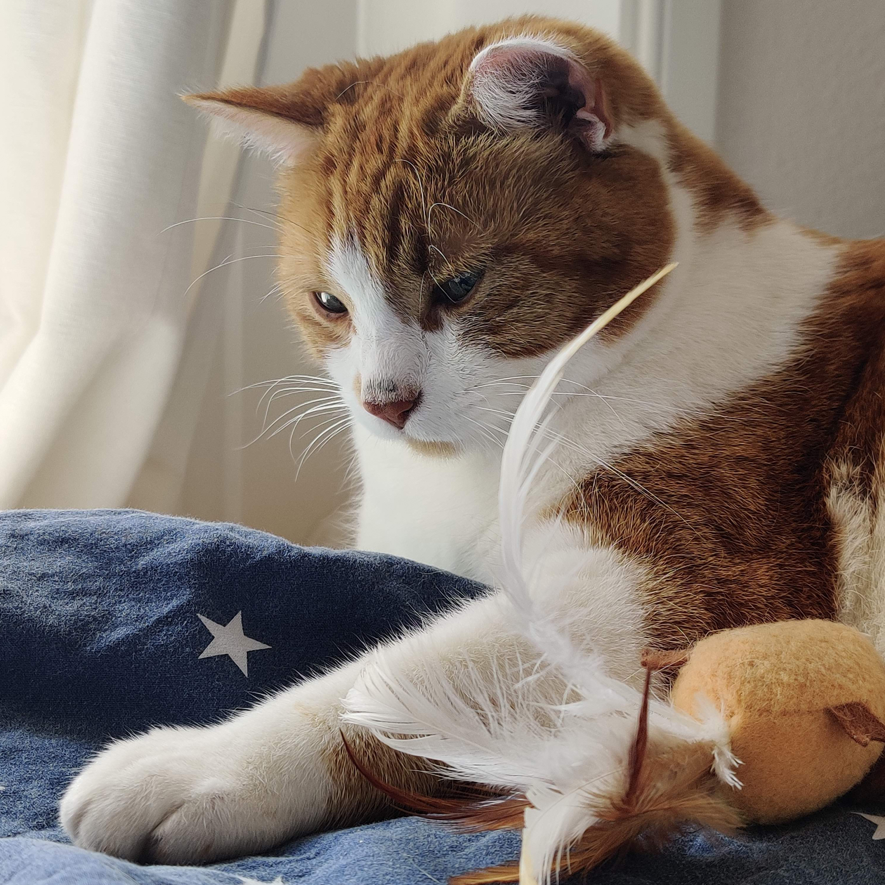

Ich lebe in Zürich am Römerhof und am liebsten verbringe ich meine Freizeit am Wasser.

Hier ein Foto von meinem Kater Chrigel. 🦁

Er ist schreckhaft und immer hungrig,
aber äusserst liebenswert.
Sein Fell ist Orange und Weiss.